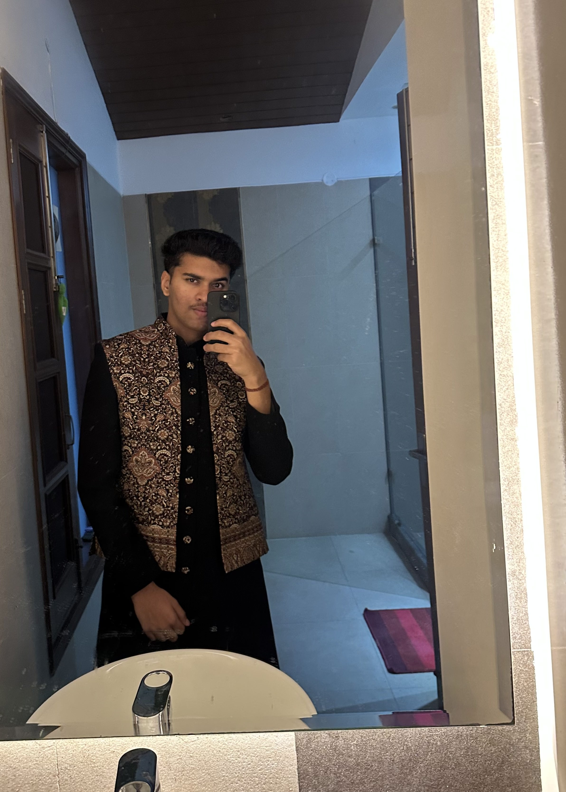
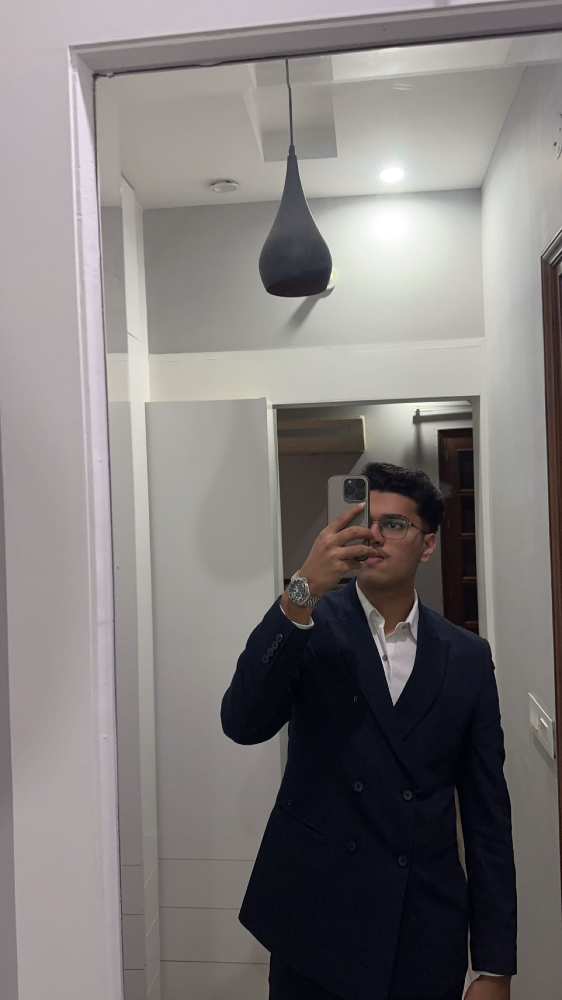
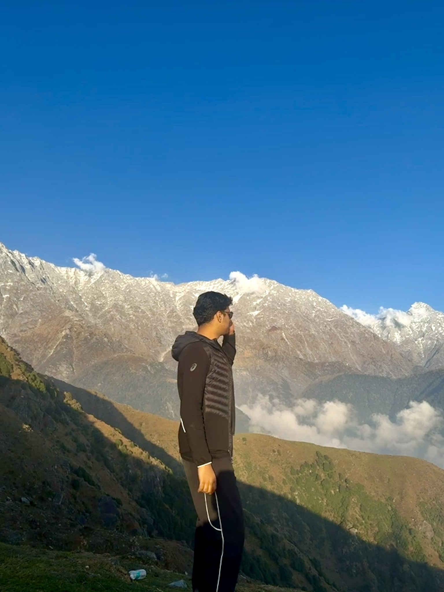
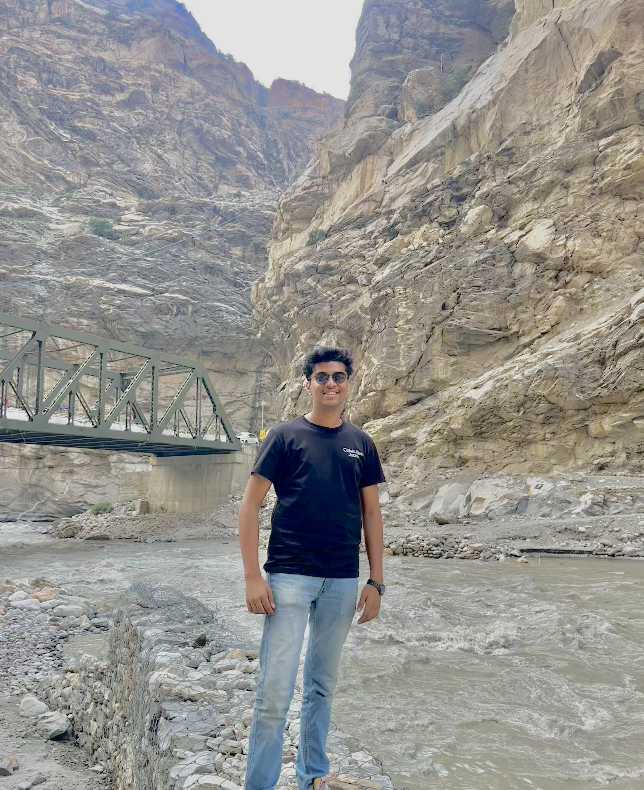
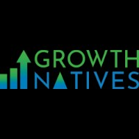

About Me
I am a student with a strong interest in technology, especially data analysis and machine learning. I enjoy working with data to uncover patterns and generate insights that support better decisions.
Beyond academics, I enjoy cricket and other outdoor sports. They help me stay active while strengthening teamwork, focus, and problem-solving.
I am always curious to learn new technologies and want to build a career in data science and machine learning through practical experience and real-world projects.
Gallery




Academic Journey
Punjab Engineering College
B.Tech in Electronics and Communication | 2027
S.G.G.S., Chandigarh
CBSE Class 12 | 92% | 2023
Hansraj Public School, Panchkula
CBSE Class 10 | 88% | 2021
Career Highlights

Growth Natives
Data Science Intern | January 2026 - April 2026
Developed and trained predictive machine learning models using Python, scikit-learn, and Pandas to forecast customer conversion probability for digital marketing campaigns.
Performed data cleaning, feature engineering, and exploratory data analysis on large customer engagement datasets to improve model accuracy.
Experience Entertainment
Marketing Team Member | August 2024 - November 2024
Analyzed audience engagement data to identify content trends and optimize posting strategies, resulting in increased reach.
Assisted with social media management by reviewing performance data and identifying which posts delivered stronger engagement.
Projects
Heart Disease Predictor API
Trained a logistic regression model on a dataset of 70,000+ patient records using 12 health-related features to estimate cardiovascular risk probability.
Built an end-to-end ML application integrating a machine learning model, FastAPI backend, and Streamlit frontend.
The model achieved approximately 0.73 accuracy, 0.72 precision, and 0.74 recall on the test dataset.
Churn Prediction Using XGBoost
Built an XGBoost churn model on 10,000+ banking customers and achieved a ROC-AUC of 0.86 after hyperparameter tuning with GridSearchCV.
Engineered 8+ business-driven features and used permutation importance to identify engagement and relationship depth as primary churn drivers.
Gained hands-on experience in machine learning workflow design, tuning, and evaluation.
Indian Domestic Flight Analysis
Engineered a full ETL pipeline using Python, Pandas, and SQLAlchemy to clean and load 10,000+ flight records into PostgreSQL.
Created an interactive Tableau dashboard and used advanced SQL analysis to uncover pricing and route insights.
Product and Brand Strategy Case Study
Ranked 19th nationwide among 800+ teams in a case study challenge involving top business schools.
Developed a competitive product and brand strategy for a functional luxury startup through market research, positioning, and SWOT analysis.
HUL Financial Model
Developed a financial model covering forecasting, DuPont analysis, market returns, and discounted cash flow valuation.
Used DuPont analysis to break return on equity into profitability, efficiency, and leverage drivers.
Certifications

Oracle AI Associate
Issued by Oracle | 2025

Databases and SQL for Data Science
Issued by Coursera | 2025

Financial Analyst
Issued by Udemy | 2025
Technical Skills
Soft Skills
Interests
Positions of Responsibility
Volunteer at Aashray NGO: Contributed to education, food distribution, and well-being initiatives for individuals in need.
Captain: PEC HPL cricket team.
Co-founder of 360PLAY: Helped launch a startup focused on pickleball turf infrastructure.
Event Organizer: Helped organize the Freshers' event for the PEC 2028 batch.
Sub Head, Event Coordination, PEC Fest: Collaborated with event leads to execute successful events.